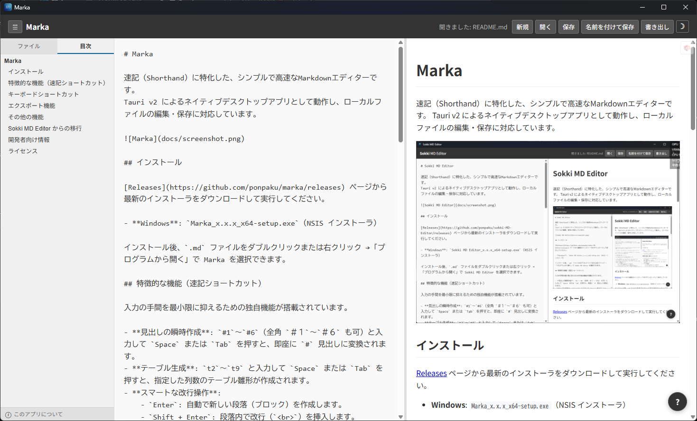

Markaは、書くスピードと軽さに特化して開発されました。
会議の議事録やアイデア出しなど、とにかく素早く記録することにフォーカス。無駄な機能を削ぎ落としました。
最新の Tauri v2 を採用。Electron製アプリ特有のもっさり感がなく、ネイティブアプリのように一瞬で起動します。
タイピングしながらシームレスに書式を適用。キーボードから手を離さずに、美しいドキュメントを構築できます。
エディターとプレビューが並ぶ、直感的なレイアウト。

Markaはオープンソース（GitHub）で公開されています。今すぐ最新版をダウンロードして、快適なエディタ体験を手に入れてください。
GitHubの Releasesページ から、お使いのOSに合ったファイル（.exe / .dmg）をダウンロード。
ダウンロードしたインストーラーを実行し、画面の指示に従います。
インストール完了後、Markaを起動してすぐに書き始められます。